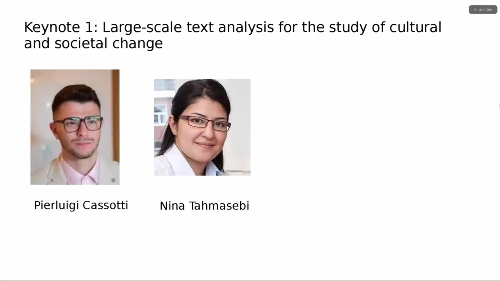
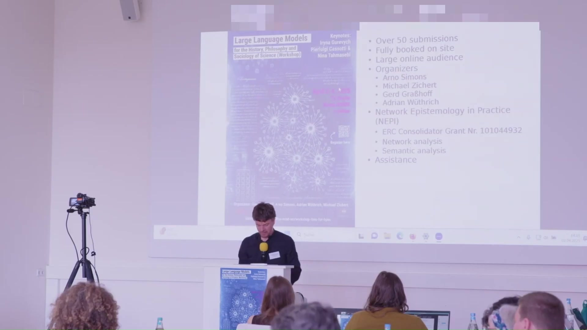

2 Large Language Models for the History, Philosophy and Sociology of Science (Workshop)
Overview
This workshop convenes researchers to explore the burgeoning applications of Large Language Models (LLMs) within the history, philosophy, and sociology of science (HPSS). It represents a confluence of scholarly interests, aiming to foster discussion on novel AI-assisted methodologies and their potential to transform research in these disciplines. The event, held from April 2nd to 4th, 2025, at TU Berlin and online, brings together diverse perspectives to examine how computational tools can offer fresh insights into scientific discovery, conceptual evolution, and the intricate dynamics of knowledge production.

2.1 The Genesis of a Collaborative Endeavour
The workshop emerged from two distinct yet complementary initiatives. One impetus originated within the “Network Epistemology in Practice” (NEPI) project. Arno Simons, a key member of this project, pioneered the training of one of the initial large language models specifically on physics texts, a domain of primary interest to the NEPI team. He proposed a broader discussion of such work, a suggestion that readily convinced Michael Zichert, also integral to the project, who had himself employed LLMs to analyse conceptual issues in physics.
A second stream of inspiration came from Gerd Graßhoff, a cooperation partner of the NEPI project with a long-standing connection to its members. Professor Graßhoff has consistently championed the application of artificial intelligence in the history and philosophy of science, particularly for analysing processes of scientific discovery. He independently conceived of a workshop focused on novel AI-assisted methods for HPSS. Recognising the shared vision, these initiatives merged, culminating in the present workshop.
2.2 Network Epistemology in Practice: Illuminating Knowledge Creation
Funding for this workshop stems from the European Research Council (ERC) grant supporting the “Network Epistemology in Practice” (NEPI) project. Within NEPI, researchers investigate the internal communication dynamics of the Atlas collaboration at CERN, the renowned particle physics laboratory. The objective is to understand more deeply how one of the world’s largest and most prominent research collaborations collectively generates new knowledge.
To achieve this, the project employs a dual approach. Firstly, network analysis helps to delineate the communication structures within the collaboration. Secondly, semantic tools, crucially involving the use of LLMs, are utilised to trace the flow of ideas through these established network structures. This application of LLMs to understand idea propagation within complex scientific communities represents a significant area of current research interest.
2.2.1 Broader Applications and Anticipation
Beyond the specific focus of the NEPI project, this workshop aims to showcase a wide array of other applications for LLMs in HPSS. A rich programme of presentations promises to unveil diverse ideas and methodologies, fostering a vibrant exchange of knowledge and stimulating further innovation in the field.
2.3 Essential Contributions and Support
The realisation of this event owes much to the dedicated efforts of several individuals. Svenja Goetz, Lea Stengel, and Julia Kim provided invaluable assistance in conceptualising aspects of the workshop and managing numerous administrative and organisational tasks. Their contributions were vital to navigating the complexities of planning.
Furthermore, the technical execution of the workshop, including the recording of keynotes and other sessions, and the provision of a seamless online experience via Zoom, benefits from the expertise of Oliver Ziegler and his Unicam team. Their support ensures that the proceedings are accessible and well-documented.
2.5 Introducing the Keynote Speakers
The workshop features distinguished keynote speakers who bring exceptional expertise to the exploration of LLMs in HPSS.
2.5.1 Pierluigi Cassotti and Nina Tahmasebi: Exploring Semantic Change
The first keynote address will be delivered by Pierluigi Cassotti and Nina Tahmasebi from the University of Gothenburg. Nina Tahmasebi is the Principal Investigator of the “Change is Key!” research programme in Gothenburg, and Pierluigi Cassotti is a researcher within this project. Their collective work on semantic change detection is highly regarded, encompassing technical contributions such as benchmark creation and broader considerations regarding the application of data science methods to humanities research questions. This focus aligns perfectly with the workshop’s thematic concerns.

2.5.2 Iryna Gurevych: Advancing Cross-Document NLP
The second keynote, scheduled for the late afternoon of the following day, will be presented by Iryna Gurevych. Professor Gurevych heads the Ubiquitous Knowledge Processing Lab at the Technical University Darmstadt. Her research focuses on information extraction, semantic text processing, and machine learning, alongside the application of Natural Language Processing (NLP) to the social sciences and humanities. Her expertise in elevating NLP to the cross-document level offers another compelling perspective for the workshop attendees.

With these introductions complete, the stage is set for an engaging exploration of Large Language Models and their transformative potential for the History, Philosophy, and Sociology of Science.